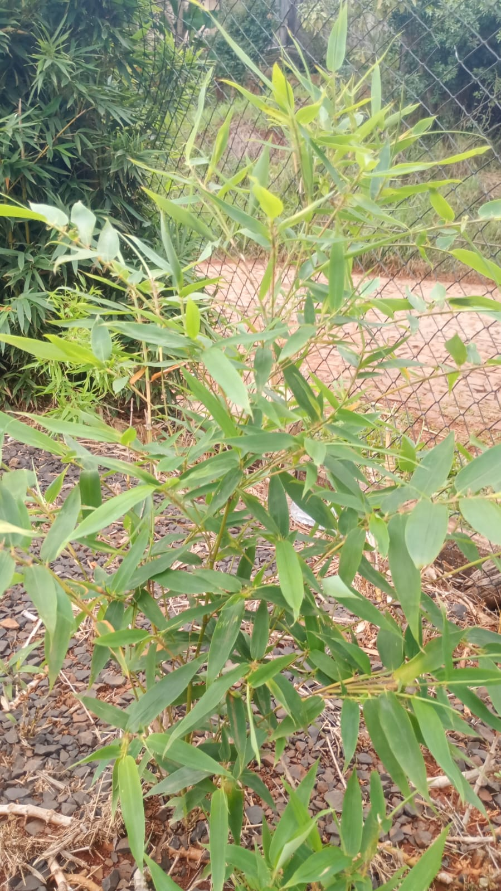
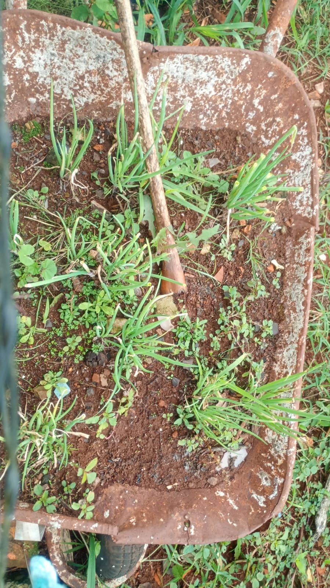

A produção é o processo que envolve a transformação de matéria-prima, mão de obra, recursos tecnológicos e outros insumos em produtos finais ou serviços. Objetivo: O objetivo da produção é criar valor, satisfazer as necessidades do mercado e gerar lucro. Etapas: O processo de produção geralmente envolve planejamento, organização, execução e controle, com o objetivo de otimizar a utilização de recursos e garantir a qualidade dos produtos ou serviços.
Uma produção sustentável busca atender às necessidades da sociedade sem comprometer o meio ambiente. Isso inclui o uso consciente de recursos naturais, energia renovável e redução de resíduos.
Produzir é essencial para o desenvolvimento econômico e social. Através dela, geramos empregos, alimentos, vestuário, tecnologia e tudo que utilizamos no dia a dia.